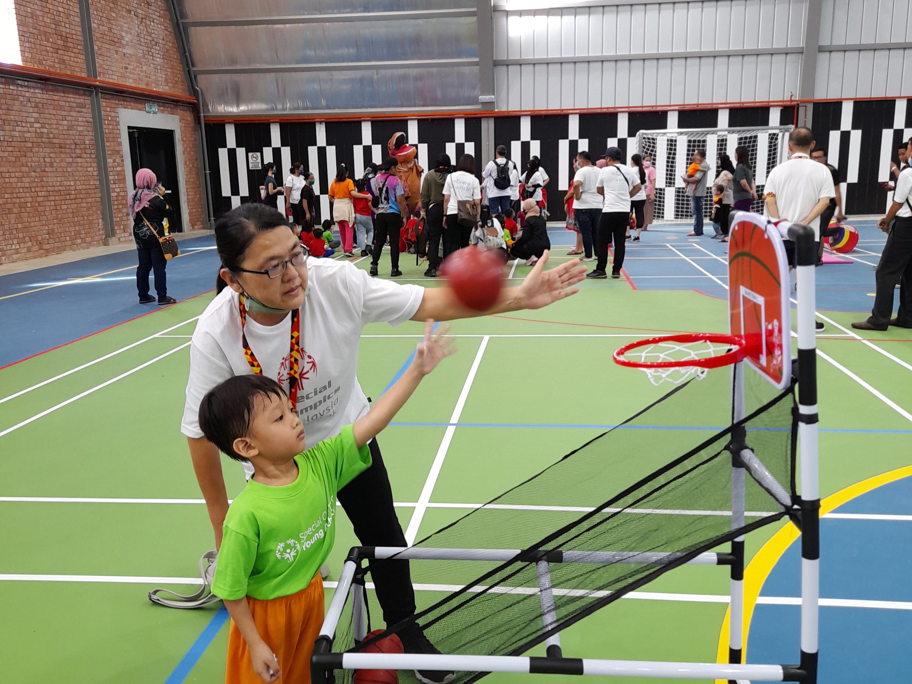

Young Athletes Program welcomes children and their families into the world Special Olympics
Activities are designed to support children of all ability levels and can be run inclusive of children with and without intellectual disabilities. Young Athletes Program is run one of three different settings — schools, communities and homes.

YAP in School
Teachers and therapists can use YAP in the classroom to support children in developing important motor, communication and learning skills.

YAP in the Community
YAP provides an opportunity for children with and without intellectual disabilities to come together with a coach for organized play. In community programs, family members can share in the fun with their child.
YAP at Home
Parents, grandparents, siblings and friends play together at home with children using YAP for activities and ideas.